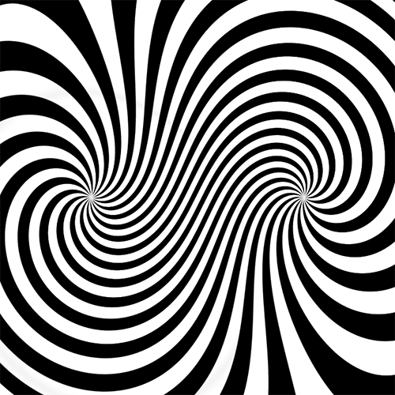

Description
This is an animated GIF of a trippy swirling pattern. If you look at it too long, it might make you feel dizzy!
File Type
Type: GIF
Why I Chose It
I remember doing a project back when I was younger where I had a swirl pattern like this that was stuck to a drill. When I turned on the drill, the pattern would spin and create a cool optical illusion. I thought it would be fun to find a similar image for this lab.
Source
I couldnt find the original source so here is a link toGIPY.They have an extensive collection of GIFS